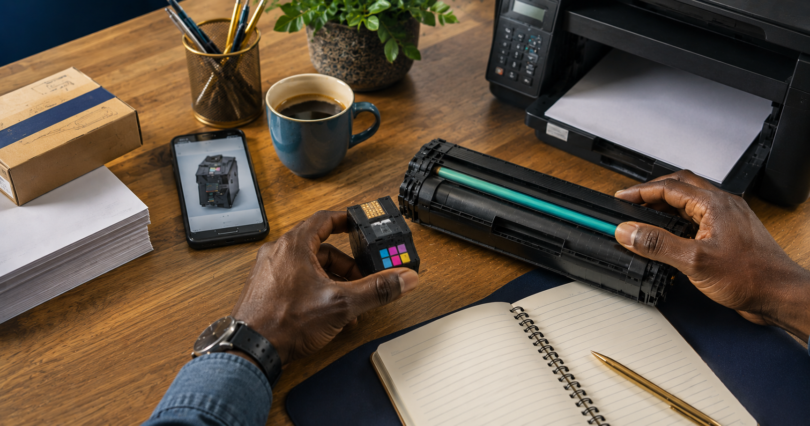
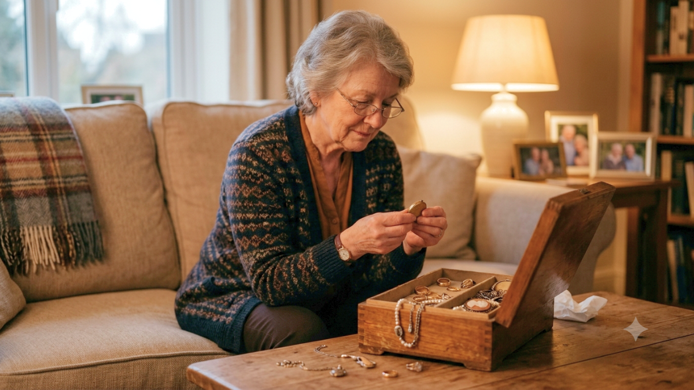

The Local Print Desk
Useful local guides, with the details in view.
Ink, toner and cartridge guides come first. Gold and silver jewellery guidance follows below when you need it.
Ink and toner first
Four checks before you travel.
Send a clear photo of the printer, cartridge or toner before you visit. Gold Wanted can check the suitable item and current availability.

Start here
Check locally before you drive for ink or toner.
Send a photo of the cartridge, toner or printer model before you make a trip.
Read the guide →
Printer basics
Identify the right ink cartridge or toner.
A clear checklist for the details that help us check the right item.
Read the guide →
Small business
Keep a small-business printer ready.
Keep the printer model and cartridge code close before the next supply warning.
Read the guide →
Refill or replacement
What to ask when your printer runs out.
Use the cartridge code and a clear photo to check a suitable option.
Read the guide →Jewellery guides
Clear information before you visit.
Gold Wanted buys gold and silver jewellery and selected household sterling pieces. Bring ID or a passport. Stones are returned where possible.

Sell jewellery
What to bring when selling gold or silver jewellery.
Read about ID, stones and the pieces Gold Wanted can assess.
Read the guide →Household silver
How we value selected household silver.
Cutlery, trays, tea services and silver jewellery can be discussed in person.
Read the guide →Gold jewellery
When you are ready to sell gold jewellery.
A practical local guide for the pieces you choose to bring in.
Read the guide →Jewellery care
Care for gold and silver jewellery at home.
Simple steps for cleaning, drying and storing valued pieces.
Read the guide →